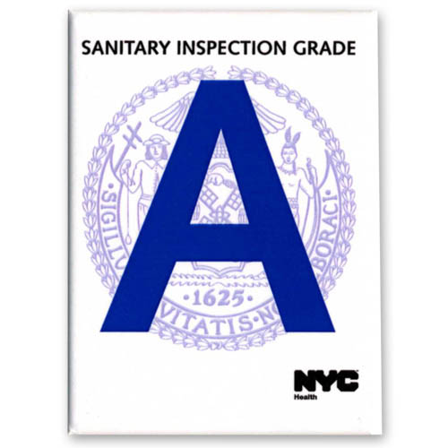

New Yorkers eat out more than a billion times a year. To help keep diners safe, the Health Department educates restaurant operators about food safety practices and inspects all 27,000 city restaurants at least once a year. Over 90 percent of NYC restaurants have "A" grades in the window, showing excellent compliance with food safety requirements.
However, warmer weather creates special challenges keeping food safe. We dug into the data to find out how hot weather affects food safety.
First, some background on foodborne illnesses
Though most foodborne illnesses are relatively minor, the Centers for Disease Control and Prevention estimates that there are 128,000 hospitalizations and 3,000 deaths per year from foodborne illnesses in the USA.
Many of these are viruses and bacteria that spread through unsafe food handling practices. For example, if bacteria from raw meat or eggs contaminate other ready-to-eat food, it can make people sick.
Food safety inspectors work to keep you safe
When you eat at a restaurant, you're placing your trust in both the restaurant and in our food safety inspectors. The Health Department employs about 100 of them, and they visit each of nearly 27,000 NYC restaurants at least once per year, to make sure restaurants meet Health Code requirements. Restaurants receive an inspection score, which gets converted into the letter grade you see posted in the window.

As part of the inspection process, food safety inspectors educate restaurant operators about food safety practices, and collect data on violations they observe. Then, our team at the Health Department analyzes the inspection data to identify common violations and understand patterns in the violations. We use this data to figure out what food safety practices need improvement - helping to reduce risks to customers like you.
Hot weather and food safety
Certain foodborne illnesses increase in the summertime, possibly because bacteria are more likely to multiply in warmer temperatures.
Potentially hazardous cold food needs to be stored at or below 41° F, to minimize the growth of microorganisms that can make you sick. Cold holding violations - not storing food at or below 41° F - are one of the most common violations that our food safety inspectors find. When potentially hazardous foods - like meat, poultry, fish, and cut melons - aren't kept cold enough, bacteria can multiply rapidly.
We investigated how outdoor temperature affects restaurant food safety patterns. To do this, we analyzed data from 64,661 inspections that took place over five summers. Of these inspections, 45 percent found cold holding violations.
Nearly half of inspections found cold holding violations

We looked at inspections conducted on higher and lower maximum temperature days, and we found a 20 percent increase in cold food holding violations on the hottest days (93° or higher) compared with average summer days (temperatures around 82°).
We talked over our findings with restaurant staff
After reviewing these data, we convened restaurant operators to talk about common challenges to keeping food cool.
For example, they told us that in the hot weather, refrigerators can break down, or stop working due to short-term power outages. If these outages happen while the restaurant is closed, it can be hard to know how long the fridge was out and how long the food was warming up.
These conversations helped us learn more about the challenges that extreme temperatures, power outages, and other emergencies pose for food safety.
Working to keep you safe
To help keep you safe from foodborne illnesses, a supervisor trained in all aspects of food safety must be present at all times while a restaurant is open for business. Supervisors must have a food protection certificate from the NYC Health Academy - the Health Department's training facility - and food safety inspectors look for this certificate during inspections.
Inspectors discuss problems they find during inspections with restaurant staff and discuss how to correct them. The Health Department also monitors data from electric utilities, and emails restaurants if they've lost power for 90 minutes or more - so that restaurants can take action to safeguard food and protect their customers.
These measures go a long way to keeping people safe. But by analyzing data from inspections, we continue to identify ways to improve our work and that of the restaurants we regulate.
If you want to make sure that your favorite restaurant is taking the right steps to keep you safe, you can look up restaurant inspection results. Meanwhile, we'll keep looking for ways to support restaurateurs so that they can keep your food safe - no matter the weather.